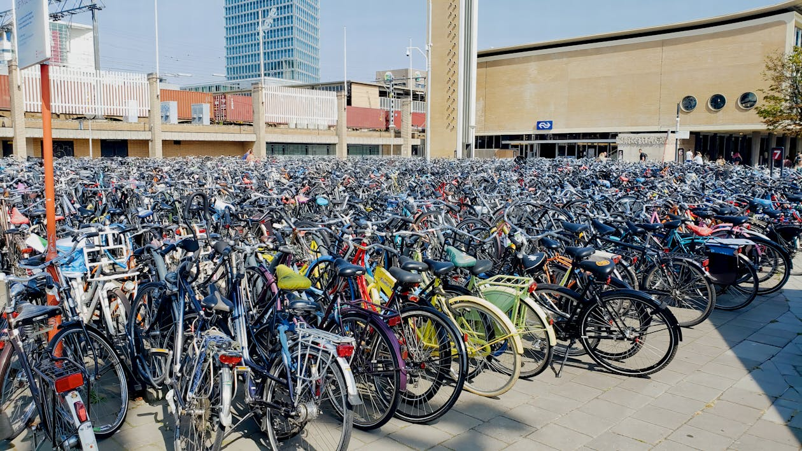

1. BELCO Tripartite Programme (3D)
A 2 year programme where undergraduate students will study in up
to 3 countries and earn up to 3 recognized degrees.
They'll follow International Marketing & Communication
at BBA INSEEC in Bordeaux (France), Supply Chain Management Financial
Management at LAB UAS in Lahti (Finland) and International Business
Consultancy at Fontys UAS in Eindhoven (the Netherlands).
2. BELCO’s Exchange Modules
BELCO Exchange modules give undergraduate students the chance to take 3-week intensive, project-based courses at partner institutions. These modules offer a unique opportunity to experience different academic and cultural environments. Students participating in BELCO's Exchange Modules can choose out of a big variety of modules!
Luxury Marketing and Digital Marketing
Bordeaux, France
This course examines luxury as a social and industry phenomenon, while the LEARNING7 program builds digital marketing skills in strategy, targeting, and campaign performance.
Read MoreEntrepreneurship in Action
Bangkok, ThailandThis 2-week program in Bangkok offers hands-on entrepreneurial experience through expert workshops and company visits, focusing on creative thinking, intercultural awareness, and leadership. It’s a unique opportunity to learn about doing business in Asia.
Read MoreArtificial Intelligence & Analytics
Eindhoven, The NetherlandsThis course equips students with a strategic understanding of Analytics and AI, enabling them to apply these technologies across business units to drive measurable results. By the end, students will be able to design solution prototypes, prioritize projects, and navigate current tools like GPT-3 within a business context.
Read More 
Customer Experience (Cx) Innovation
Eindhoven, The NetherlandsThis course focuses on understanding and improving the customer experience of landside transportation at Eindhoven Airport. Students will learn to map customer journeys, analyze decision-making processes, and apply service design and data-driven methods to create and validate transport solutions.
Read More
Investment Management
Chicago, USAThis module teaches you to think and act like a real estate consultant by advising an investor on properties in the Chicago region. You'll visit buildings, meet property owners, and gain practical insight into the real estate market while developing a professional, problem-solving mindset.
Read MorePersonal leadership
Ottawa, CanadaThis course helps you understand leadership, personality, and rhetoric while integrating personal experiences into your leadership development. It also focuses on building key employability skills.
Read MoreIntroduction to Equity, Diversity & Inclusion
Ottawa, CanadaThis course provides an understanding of equity, diversity, and inclusion, offering insights into current issues and helping you build intercultural and interpersonal skills.
Read MoreInternational Business and Multicultural Relations
San Francisco, USAThis course explores how socio-cultural differences impact international business, particularly for Colombian companies entering foreign markets. It identifies key cultural factors to improve intercultural competitiveness and support successful global strategies.
Read MoreBranding and Advertising
Eindhoven, The NetherlandsIn this course, you’ll develop and pitch a full business case to an investor, including a brand concept, marketing strategy, launch budget, and two-year growth plan. The goal is to create a compelling, sustainable brand that attracts the right audience and stands out in the market.
Read More

Digital transformation and Resilient Cities
Eindhoven, The NetherlandsThis course explores how technology, data, and cultural shifts shape modern urban development and smart cities. Students will analyze global trends, use digital tools to design innovative, resilient city models, and create data-driven solutions for real-world impact.
Read MoreInternational Marketing
Alnwick, EnglandThis module, taught at St. Alnwick Castle, examines how socio-cultural differences impact international business success, focusing on Colombian companies entering global markets. It identifies key intercultural variables to enhance competitiveness and support effective global strategies.
Read More

Organization and Management
Alnwick, EnglandTaught at St. Alnwick Castle, this module explores organizational management through the lens of socio-technical systems, focusing on planning, leadership, and control processes. Students will learn to apply core business principles, ethical reasoning, and management practices that drive performance and support diverse, responsible organizations.
Read More
Business in Europe
Alnwick, EnglandTaught at St. Alnwick Castle, this course explores how Europe's diverse cultures and complex history have shaped its rise as a global economic power. Students will analyze regional business environments, cultural differences, and multinational operations while developing insights and recommendations through on-site observations and research.
Read More
Business Challenge and Project
Bordeaux, FranceIn this course, students collaborate remotely to solve business challenges within a specific industry through a simulation game. They will conduct market analysis, develop a business model, and create a go-to-market strategy, focusing on entrepreneurship, branding, and performance.
Read More
Budget and Management Control and Negotiation
Bordeaux, FranceThis course teaches management control systems and tools to improve organizational performance, covering key concepts and processes. It also prepares students for international business negotiations by exploring diverse negotiation styles and multicultural approaches.
Read More

Wine Business and Brand Management
Bordeaux, FranceThis course covers practical brand management and corporate communication challenges, emphasizing the importance of personal branding. It also provides an introduction to the French wine sector, including grape brewing, winemaking, and winery management and marketing strategies.
Read More
Introduction to Corporate Strategy and International Business Ethics
Bordeaux, FranceThis course develops strategic analysis skills for evaluating companies or industries and emphasizes the importance of ethical, sustainable business practices. It prepares future managers to understand their social responsibilities in a global business context.
Read More